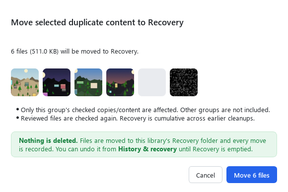
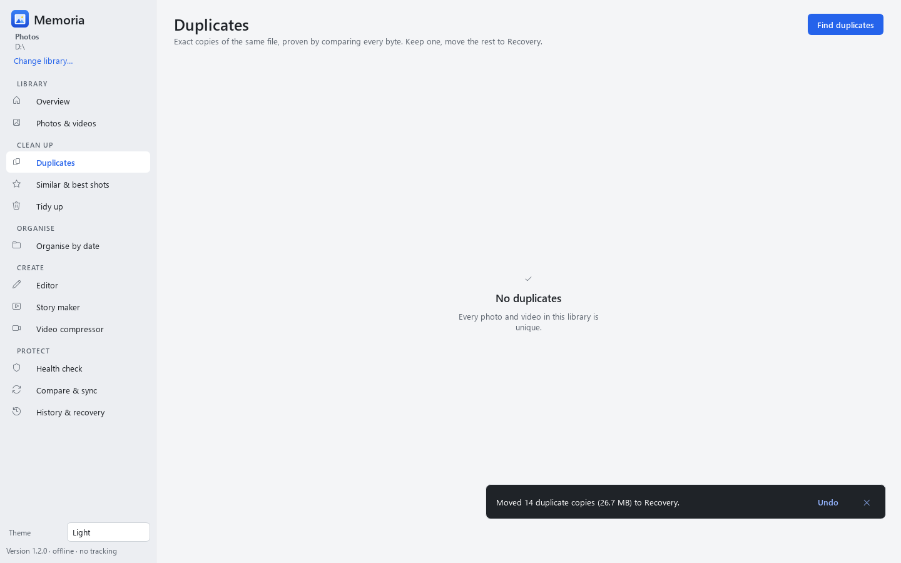
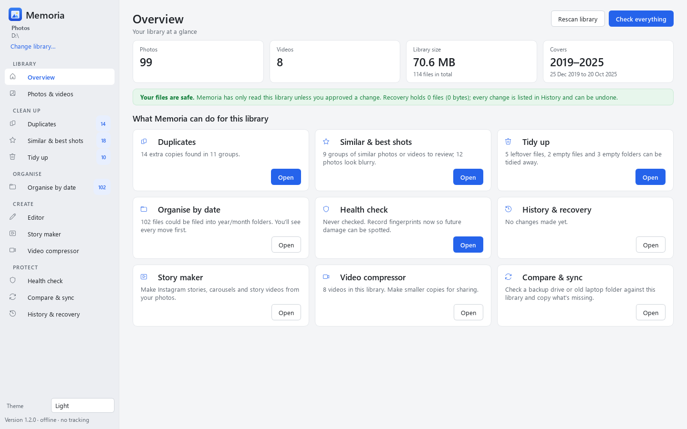

Memoria
MemoriaDesign document
Why Memoria looks and behaves the way it does — the product goals, the trust model that every tool obeys, the information architecture, interaction patterns and the decisions behind them.
Summary
Memoria is a desktop application for looking after a personal photo and video library on a Windows PC. It finds exact duplicates and look-alike shots, chooses the best photo of a burst, removes system junk, files photos into date folders, detects silent file damage, compares a library with a backup, creates Instagram stories and story videos, and makes smaller copies of videos for sharing.
It started as a Python command-line tool with twenty commands. That tool worked for its author but was hard to trust: commands acted on plans saved earlier, results were printed as text, and a hashing bug made it skip almost every real photo while reporting them as corrupted. The desktop redesign keeps the useful engine ideas and wraps them in an interface whose first job is to make every change visible, explainable and reversible.
Problem & users
The problem
- Libraries grow messy. Phone backups, WhatsApp forwards, "Download (1).jpg", bursts of ten nearly identical frames, Thumbs.db files and empty folders accumulate over years and across devices.
- Cleaning up feels dangerous. Existing duplicate finders delete straight to the Recycle Bin (or permanently), decide which copy to keep without saying why, and give no way to review or undo a large batch.
- Damage is silent. A failing drive or a bad sync can corrupt a photo without changing its name, size or date. Nobody notices until the photo is needed.
- Sharing needs extra tools. Turning a trip into an Instagram story or shrinking a video below WhatsApp's limit usually means uploading private media to an online editor.
Primary user
A person with a large personal library (thousands to tens of thousands of files, several devices' worth of backups), comfortable with Windows but not necessarily technical, who values their photos highly and is therefore cautious. The design assumes the user will not trust automation until it has proven itself on their own files — so the app must make proof easy to see.
Scenarios that shaped the design
"I copied my phone twice"
Hundreds of exact copies across Phone Backup and Downloads. Wants space back without losing anything, and wants the "real" copy kept in the tidy folder.
"Which of these 8 is best?"
Bursts and retakes. Wants a suggestion with a reason, and the freedom to disagree.
"Is my backup complete?"
An external drive that was reorganised differently. Wants to know what is missing — by content, not by name.
"Make a story from the trip"
Wants a 1080×1920 collage or short video on the PC, without uploading the photos anywhere.
Goals & non-goals
| Goals | Non-goals |
|---|---|
|
|
Design principles
1. Looking is free
Scanning, analysing, comparing and checking only read files. Users should feel safe clicking any "Find…" button.
2. Show before doing
Every change is previewed as a concrete list of files, then summarised in a confirmation that states exactly what will happen.
3. Move, never delete
"Remove" means move to Recovery. Permanent deletion is a separate, deliberate act with its own warning.
4. Everything has an Undo
Each change becomes a named entry in History; an Undo button appears the moment it finishes.
5. Explain the machine
Every automatic choice carries its reason: "In a backup folder", "Sharpest (20× the softest)", "Date in file name".
6. The user has the last word
Keepers and best picks can be changed, groups excluded, items unticked. Risky categories start unticked.
7. Re-check at the last moment
Decisions are re-validated against the disk right before acting. If anything changed, Memoria skips it and says so.
8. Never block the window
All work runs in the background with progress and a Cancel button; one task at a time so actions can't collide.
Trust model
Trust is the product. It is not delivered by reassuring words but by rules the engine enforces — the interface then simply tells the truth about those rules.
Safety invariants
| # | Invariant | Enforced by | How the user sees it |
|---|---|---|---|
| I1 | Reading never writes outside .memoria | Scanner, analysis, health, compare only open files for reading; the catalogue, thumbnails and journal live in the hidden library folder. | Welcome screen and Overview banner: "Memoria has only read this library unless you approved a change." |
| I2 | No change without confirmation | Every page routes changes through one shared
apply_actions flow that opens a confirmation dialog first. | Dialog with counts, size, what is kept, and a green "Nothing is deleted" note. |
| I3 | Nothing is deleted | The executor has no delete operation for user files; "recycle" moves into
.memoria\recovery\<batch>\<original relative path>. Only Empty Recovery deletes. |
Recovery size on Overview and History; Empty Recovery is red and requires ticking an acknowledgement. |
| I4 | Every change is undoable | Each operation is journaled in SQLite before it runs
(pending) and after (done). | Toast with Undo; History lists every step. |
| I5 | No stale decisions | Pre-flight checks size and modified time of each file; duplicates are re-hashed in full and the kept copy is verified too. | "3 files skipped because they changed since you reviewed." |
| I6 | No overwrites | Moves, copies and undo choose a non-clashing name ("IMG_1 (2).jpg"). | Undo reports "restored as …" if a clash occurred. |
| I7 | Copies are proven | Copy to temporary name → full-content hash compare → rename. | Compare & sync banner explains this. |
| I8 | Crashes leave a consistent record | On opening a library, pending journal entries are reconciled against the disk. | "Memoria was interrupted last time… recorded in History, where you can undo them." |
| I9 | Identity means identical bytes | Exact-duplicate decisions require equal xxh3-128 hashes of the whole file; sampled hashes are only used to rule files out. | "Proven by comparing every byte." |
| I11 | Unreadable is not deleted | A scan aborts if the library root is unreachable; files under folders that can't be read keep their catalogue rows. | "2 folders couldn't be read (kept as they were)". |
| I12 | One writer per library | A cross-process lock file in .memoria; a second window
is refused. | "This library is already open in another Memoria window." |
| I13 | Undo restores knowledge, not just files | Catalogue rows of recycled files are parked and restored on undo (thumbnails, dates, health fingerprints). | Health check stays "Intact" after an undo. |
| I14 | Edits never touch originals | The Editor only writes new files (unique names, temp file →
verify → rename) and journals them as create operations. | "Saved IMG_1 (edited).jpg. The original is unchanged." with Undo. |
| I10 | Originals of creative tools are untouched | Story and video outputs are new files in a separate output folder; video copies must play, match duration and be smaller or they are discarded. | Video page banner and result column. |
What can go wrong — and the design response
| Situation | Response |
|---|---|
| User edits a photo between "Find" and "Apply" | Pre-flight detects size/mtime change → skipped, reported. |
| The copy chosen to keep is deleted or changed by another app | Guard check fails → its duplicates are not moved. |
| Power cut halfway through a 5,000-file move | Journal shows which moves completed; batch is marked Partly done and can be undone. |
| Undo target name now taken by a new file | Restored under a new name; nothing overwritten. |
| Files are similar but not identical | Similar tool says so in the confirmation; blurry list starts unticked; a group can never be emptied completely. |
| File modified date is wrong (common for copies) | Organise skips files dated only by modified time unless the user opts in; date source is shown for every file. |
| Library drive unplugged during a scan | Scan stops with a clear message; nothing in the catalogue is removed. |
| Two Memoria windows on one library | The second is refused by the library lock. |
| Catalogue from a newer Memoria version | Refused with "please update" instead of being misread. |
| Two operations at once | Single task runner; start buttons disable while busy; a second request shows "Please wait for … to finish first." |
Information architecture
The sidebar groups pages by the user's intent rather than by technique. Group order follows a natural journey: understand the library, clean it, organise it, create from it, and protect it.
| Group | Pages | User intent |
|---|---|---|
| LIBRARY | Overview · Photos & videos | "What do I have?" |
| CLEAN UP | Duplicates · Similar & best shots · Tidy up | "Get rid of what I don't need — safely." |
| ORGANISE | Organise by date | "Make it findable." |
| CREATE | Editor · Story maker · Video compressor | "Fix it up and share it." |
| PROTECT | Health check · Compare & sync · History & recovery | "Make sure I never lose it." |
Check everything (Overview) runs every read-only finder in one pass. Its results feed the pages directly and appear as count badges in the sidebar, turning the sidebar into a to-do list. Results stay valid until the library changes (a generation counter invalidates them).
Indexing is not a page: it happens automatically whenever a library is opened (incremental, read-only), with a Rescan library button on Overview. The Overview page doubles as a dashboard: each tool card states, in one sentence, what that tool would do for this library ("25 files might have exact copies"), and highlights the cards worth visiting.
From 20 commands to 11 pages
| Old CLI command(s) | Now | Why |
|---|---|---|
index | Automatic on open; Rescan library | An index is a means, not a goal. |
duplicate-report + duplicate-execute | Duplicates | Report and execute were separated in time; now review and apply happen on one screen with the same data. |
clean-report + clean-execute | Tidy up | Same merge; categories become tickable groups. |
organize-report + organize-execute | Organise by date | Same merge; plan is an expandable tree of destination folders. |
verify | Health check | Re-designed: fingerprints + silent-damage detection (the old verify reported every large file as corrupt). |
timeline, find | Photos & videos | A visual timeline and search replace text output. |
import, compare, sync | Compare & sync | Import is "copy into library" from another folder. |
undo | History & recovery (+ toast Undo) | Undo is available everywhere, not as a separate command. |
status | Overview | — |
geomap | Removed | Sent GPS coordinates to an online geocoder (privacy). Coordinates are shown in the preview instead. |
export (CSV) | Removed | The catalogue is a documented SQLite database. |
reset | Removed from UI | Deleting the hidden .memoria folder does the same; too destructive for a button. |
| — | Similar & best shots, Story maker, Video compressor | New tools from the product plan. |
Interaction model
Find → Review → Confirm → Apply → Undo
- Find — a primary button starts a read-only background task. Progress and Cancel appear in a task bar at the bottom of the window.
- Select (Photos & videos) — multi-select reveals a selection bar with batch actions: Move to Recovery, Copy to folder, Move to folder, Story maker, Compress videos.
- Review — results show as thumbnails with badges (KEEP, COPY, BEST), reasons beneath each file, a large preview with metadata, and running totals ("14 copies (26.7 MB) will move to Recovery · 11 originals kept"). Users can change the keeper/best pick, tick/untick items and include/exclude whole groups.
- Confirm — one dialog per change: a sentence summary, thumbnails of the affected files (+N more), bullet details (what is kept, what is re-checked), a green note that nothing is deleted, and a button labelled with the exact action ("Move 14 copies"). Cancel has initial focus.
- Apply — runs in the background; the page refreshes itself afterwards.
- Undo — a toast offers Undo for ten seconds; History offers it indefinitely (until Recovery for that change is emptied).


States every page handles
| State | Design |
|---|---|
| Not run yet | Empty state with an icon, a one-paragraph explanation of what the tool does and why it's safe, and the primary button. |
| Nothing found | Positive empty state ("No duplicates — every photo and video in this library is unique"). |
| Busy | Task bar with title, message ("Analysing photos and videos… 412 of 1,050"), determinate progress where possible with percentage, elapsed time and time left; multi-step work shows "Step 2 of 6 · …". Cancel (Esc). Start buttons disable. Page insights compute in the background ("Updating…") without blocking. |
| Cancelled | Toast: "Stopped. Anything already done is recorded in History." Partial batches stay undoable. |
| Partial success | Toast states skipped files and why; failures open a dialog listing each file and confirming it was left in place. |
| Error | Dialog with a plain sentence, reassurance about file state, and expandable technical details. |
| Library changed elsewhere | Pages are marked stale and refresh when shown, never while a task runs. |
Explaining decisions
Automatic choices are only acceptable if the user can see why they were made. Every engine heuristic therefore returns a reason alongside its result:
| Decision | Example explanations |
|---|---|
| Which duplicate to keep | "Kept: best name and location"; others: "Name looks like a copy", "In a backup/download/copy folder", "Newer copy of the same file". |
| Best shot | "Best pick: sharpest (20.1× the softest), best exposure, 2 faces detected"; others: "blurrier (25% of best sharpness)", "too dark", "smaller (800×600)". |
| Photo date | "Camera date", "Date in file name", "File modified date (less reliable)". |
| Problem files | "The file is incomplete — it was probably cut off during a copy or download." |
| Video result | "620.7 KB → 155.9 KB (75% smaller), quality SSIM 0.999 · Excellent". |
Visual design system
Two palettes — Light and Dark — plus Match Windows, which follows the system setting live. Every colour comes from the active palette (no hard-coded colours in pages); switching theme rebuilds the window and reopens the same library and page. Badge colours (KEEP/BEST) stay identical in both themes so their meaning never shifts.
A calm, Windows 11-like style: neutral surfaces, one blue accent for primary actions, and semantic colours reserved for meaning — green for safety, amber for caution, red only for the single destructive action.
primary buttons, selection
info banners, selection bg
KEEP/BEST, savings, trust
"Nothing is deleted"
uncertain dates, skipped
Empty Recovery, damage
Typography & iconography
- Segoe UI Variable (falls back to Segoe UI): page title 19 pt semibold, section 12.5 pt semibold, body 10 pt, captions 9 pt muted.
- Icons use the system Segoe Fluent Icons font (fallback Segoe MDL2 Assets) so they match Windows and cost nothing to ship.
Components
| Component | Use |
|---|---|
| Page header | Title, one-line subtitle explaining the page's promise, primary action on the right. |
| Tile | Big number + label (+ optional sub-line), for counts and sizes. |
| Banner | Trust (green), info (blue), warning (amber), danger (red) explanations. |
| Card | White rounded container for groups of controls. |
| Photo grid | Thumbnail cells with rounded corners, badge pill (KEEP/COPY/BEST), optional tick box, video duration tag, one or two caption lines (second line can carry a coloured reason). |
| Preview pane | Large image + facts: date with source, size, camera, location, path, problem in plain words; Open / Show in folder. |
| Master–detail | Group list on the left (thumbnail + "Burst · 5 photos"), group grid in the middle, preview on the right (Duplicates, Similar). |
| Task bar | Bottom strip for the running task, with progress and Cancel. |
| Toast | Dark bottom-right notification with optional Undo. |
| Confirm dialog | Title, summary, bullets, safety note, action-named primary button; optional acknowledgement checkbox for destructive actions. |
| Segmented control | Mutually exclusive modes (Story images / Carousel / Story video; High / Balanced / Small). |

Writing guidelines
- Say what will happen, in numbers. "14 files (26.7 MB) will be moved to Recovery." not "Proceed?"
- Lead with reassurance where it is true. "Nothing is deleted." "The other folder is only read while comparing."
- Name buttons after their action. "Move 14 copies", "Copy 79 files to other folder", "Delete permanently".
- No jargon in the main text. "Proven by comparing every byte" instead of "xxh3-128 match"; technical detail goes in tooltips or expandable details.
- Explain uncertainty. "File modified date — may be inaccurate", "These photos are similar, not identical".
- Errors tell the user the state of their files. "They were left exactly where they were."
- British spelling (organise, colour), sentence case, no exclamation marks.
Key decisions
| Decision | Chosen | Alternatives considered | Rationale |
|---|---|---|---|
| App stack | Python + PySide6 (Qt) | Rust + Tauri; C# WinUI/WPF; pywebview | Reuses the existing engine; best ecosystem for image analysis, OpenCV, FFmpeg and story rendering; native Qt widgets render thousands of thumbnails smoothly. Hot paths are already in native code (Pillow, NumPy, xxhash, x264). Rust via PyO3 remains an option for profiled bottlenecks. |
| Where the catalogue lives | Hidden .memoria folder inside the library | %LOCALAPPDATA% | Travels with external drives; Recovery must be on the same volume so moves are instant renames, not copies. |
| Removal | Library Recovery folder | Windows Recycle Bin | Recycle Bin is emptied by other tools, has size limits, and can't be tied to a reversible batch with original paths. |
| Exact duplicates | Size → sampled hash → full hash | Full hash everything; name/size matching | Unique sizes are never read; certainty only from full content. |
| Similar photos | 64-bit difference hash + capture-time bursts | CLIP embeddings; pHash | dHash is fast, offline and explainable; CLIP finds "same subject", which is not "same photo" (see product plan). |
| Best-shot scoring | Sharpness (log-scaled), exposure, resolution, faces — measured at a fixed 512 px | Learned aesthetic model | Transparent and explainable; fixed scale prevents small copies looking sharper. |
| Blurry detection | Opt-in review, nothing pre-ticked, 3 sensitivity presets | Auto-select | Blur metrics misfire on night, fog and intentional softness. |
| Organise dates | EXIF → filename → modified time (skipped by default) | Modified time always | Copies reset modified time; filing them by it would scatter photos into wrong years. |
| Video tooling | FFmpeg from imageio-ffmpeg | Require user install | Zero setup; the binary is bundled with the app. |
| Performance changes | Only lossless speed-ups (laziness, threading, vectorisation, trimming unused binaries) | Cached backup hashes; sampled health checks | A cache keyed on size+date would miss silent corruption — the exact thing Health and Compare exist to catch. |
| Similar videos | 8 frame dHashes + duration, median distance ≤ 12, ±1-frame alignment | Full-video perceptual hashing; audio fingerprints | Fast (≈0.15 s per short clip), explainable, robust to re-encoding and small trims; measured margin between copies (3–9) and unrelated clips (≥16). |
| Editing model | Non-destructive: per-file edit recipes, previewed live, saved as new files | In-place editing with backups; sidecar edit files | Matches the "never change originals" promise with zero new concepts; results are ordinary files any app can open, and Undo is the familiar History. |
| Video cuts | Re-encode (frame-accurate) | Stream copy at keyframes | Stream copy is faster but cuts at the nearest keyframe, so a split could silently start seconds early — not trustworthy. |
| Theme switching | Rebuild the window | Live restyling of every widget | Guarantees no stale colours anywhere; state that matters (library, page, geometry) is restored. |
| Concurrency | One user task at a time | Parallel tasks | Prevents conflicting file operations and simplifies the mental model. |
Performance as a design requirement
Slow tools teach users to stop checking. The design budget is: opening a known library feels instant, finding duplicates takes seconds, and the window never freezes.
- Incremental scan: unchanged files (same size and modified time) are skipped — a rescan of 1,000 photos takes 0.01 s.
- JPEG decoding at reduced resolution and parallel analysis (≈180 photos/s on the benchmark machine).
- Duplicate funnel: only files sharing a size are ever read.
- Similarity: vectorised, multi-threaded Hamming distance (100,000 photos in ≈4 s); bursts found by a time-sorted window.
- Thumbnails stored once in their own SQLite file; the grid decodes only visible cells.
See the technical document for measurements.
Accessibility
- Colour is never the only signal: badges carry words (KEEP, BEST, COPY), statuses are spelled out.
- Keyboard: grids support arrow navigation, Space toggles a tick box, Delete removes from the Story selection; dialogs focus Cancel first.
- High-DPI aware (Qt 6), text uses system fonts at legible sizes; tooltips repeat truncated names and full paths.
- Dark theme and "Match Windows"; full keyboard operation of the main flows (Ctrl+1…0 pages, F5, Ctrl+Z, Esc, Ctrl+F, Ctrl+A, Delete, arrows in the viewer).
- Known gap: limited screen-reader labelling of custom-painted grid cells (see roadmap).
Risks & limitations
| Risk | Mitigation / status |
|---|---|
| Heuristics tuned on generated images | Blur thresholds and best-shot weights are calibrated on the synthetic test library; real-world tuning is expected. Nothing is auto-applied. |
| Similar-video margin | Unrelated videos with very similar visuals (e.g. the same static scene) may score close to the threshold; groups are suggestions and nothing is pre-applied. |
| Haar face detection is basic | Faces only nudge the best-shot score (12% weight). |
| Recovery uses disk space | Size is shown on Overview and History; emptying is explicit. |
| Very large libraries (>100k) | Engine scales; some page refreshes load the full catalogue in memory and may need pagination. |
| Network drives | Untested; moves across volumes fall back to verified copy + delete of the source. |
| Packaged size (~380 MB) | Dominated by Qt, OpenCV and FFmpeg; could be trimmed. |
Roadmap
- Calibrate blur and best-shot scoring on real libraries (with an opt-in local feedback log).
- Screen-reader names for grid items.
- Removable-drive catalogue (find which disconnected drive holds a file).
- Screenshot text search (local OCR) in Photos & videos.
- Backup restore drill: restore a sample from a backup and prove it matches.
- Optional Rust (PyO3) extension for hashing and similarity if profiling shows a need.